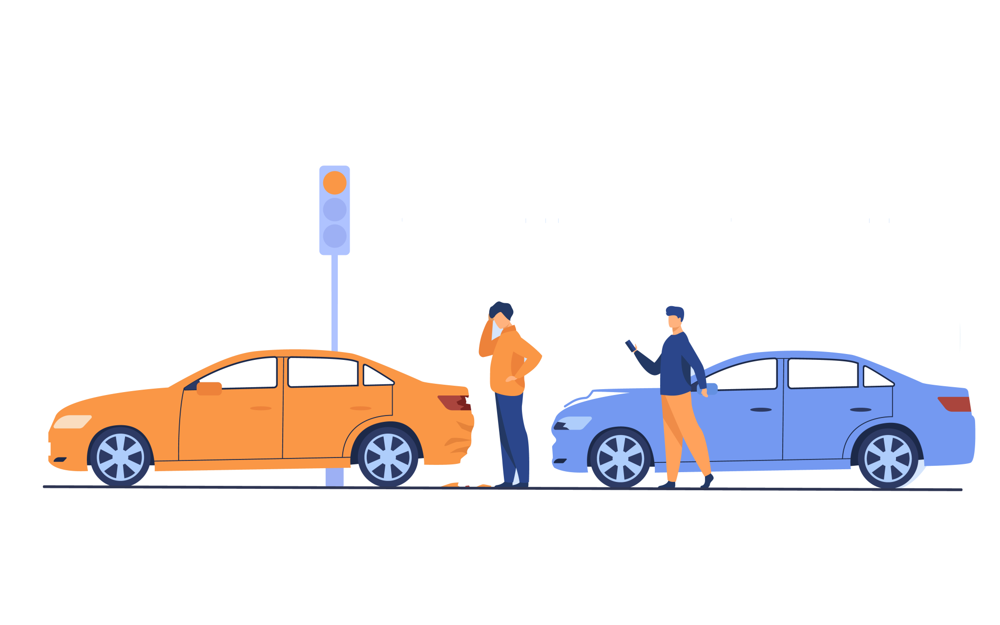

<section id="second-page">
    <div class="container-fluid">
        <div class="img-container">
            
        </div>
        <div class="info-container" >
            <h1  data-aos="fade-left">Nous sommes déterminés à révolutionner le processus de déclaration des accidents, en fournissant une plateforme simplifiée et efficace permettant aux individus de documenter leurs constats</h1>
            <button mat-button class="Add-btn" routerLink="/help" >Plus de details</button>
        </div>
    </div>
</section>
<!-- <section id="first-page">
    <div class="container">
        <div class="col-5 text">
            <h1>Les accidents de voiture étaient autrefois remplis de défis lorsqu'il s'agissait de les signaler.</h1>
            <button class="mx-auto" mat-button>Envoyer Constat</button>
        </div>
        <div class="sideImage">
            
        </div>
    </div>
</section> -->